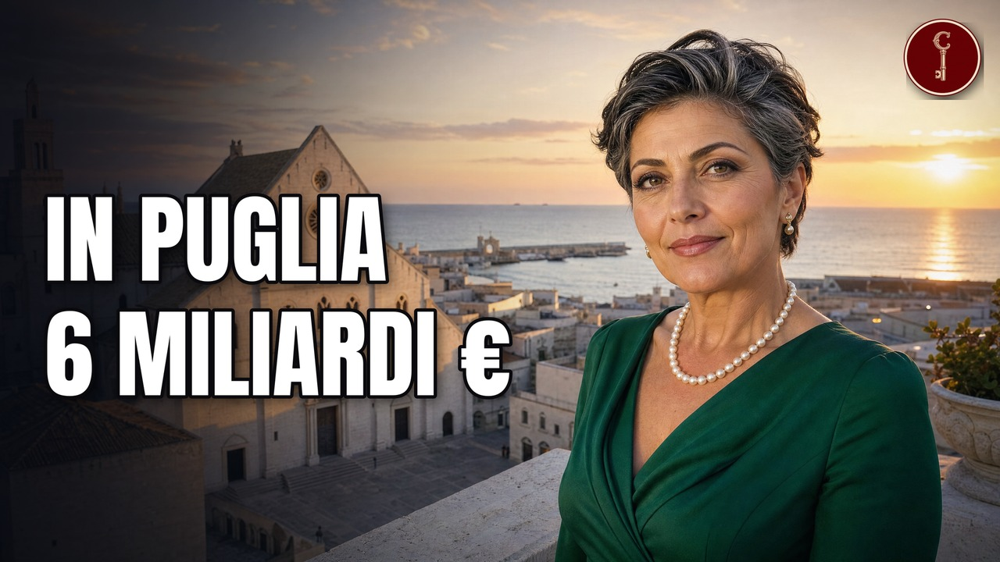

Puglia
Le 12 famiglie baresi e pugliesi più RICCHE (una è nata da una scommessa al bar)

Guarda il video su YouTubeFonti della ricerca
- affaritaliani apulia distribuzione 2020
- affaritaliani maiora 2023
- agi borgoegnazia 2024
- atoka divella
- avvenire delvecchio 2022
- aziende megamark srl
- beverfood sigma tato 2011
- businessonline puglia 2025
- businesswire natuzzi ceo 2025
- carlino delvecchio 2022
- cdp andriani 2023
- corrierecomunicazioni sitael ey 2024
- despar efanews48 maiora 2023
- despar maiora 2018
- economyup megamark 2017
- foodweb divella storia 2022
- forbes arnault puglia 2023
- forbes borgoegnazia 2024
- forbes casillo 2026
- forbes maiora 2021
- forbesbr casillo 2026
- ice andriani canada 2025
- ice plma andriani 2023
- ilfoglio ladisa 2024
- ilpost borgoegnazia g7 2024
- ilpostalista divella francobollo 2020
- ilsole24ore en angel siemens 2026
- inforcapital andriani nuo 2026
- intesasanpaolo andriani 2026
- intesasanpaolo casillo 2025
- italiaoggi megamark 2025
- laconceria casarano distretto 2025
- laconceria filograna abbigliamento 2023
- laconceria filograna montedoro 2025
- laconceria leoshoes 200mln 2022
- laconceria lvmh leoshoes smentita 2023
- laconceria natuzzi 479 2026
- marketscreener natuzzi insider 2026
- modaes leoshoes lvmh 2023
- molfetta cartaservizi ladisa
- money natuzzi crisi 2025
- money top10 bari
- mydespar gdo maiora 202510
- mydespar pagine maiora 2018
- panorama melpignano 2023
- partitaiva bari 2026
- partitaiva puglia 2025 s1
- quifinanza casillo altograno 2025
- quifinanza delvecchio
- shippingitaly gts borsa 2023
- shippingitaly gts marguerite 2021
- siemens press mermec 2026
- simplywall natuzzi management 2026
- sole24ore en egnazia brand 2024
- startmag en mermec perche 2026
- startmag gdosud 2025
- teleborsa natuzzi cnc 2026
- tg24sky borgoegnazia 2024
- trasportoeuropa gts rete
- uniba maldarizzi bilancio2019
- uniba pomarico bio 2026
- webull natuzzi fy2025
- wewealth delvecchio
- wikipedia en borgoegnazia
- wikipedia en pasquale natuzzi
- wikipedia en vito pertosa
Attribuzioni di immagini e video
Puglia bari old-town.jpg
Francesco Di Stefano 08 · CC BY-SA 4.0

Francesco Di Stefano 08 · CC BY-SA 4.0
Puglia - Torre Santa Susanna - Contrada Paradiso- ulivi giganti secolari.jpg
Deblu68 · CC BY 3.0

Deblu68 · CC BY 3.0
Prime Minister Rishi Sunak attends the G7 Summit in Italy (53788635682).jpg
Number 10 · CC BY 2.0
.jpg){kind=link}
Number 10 · CC BY 2.0
Ex monastero di santa maria del piede, visuale da una finestra a strapiombo sulla gravina.JPG
Giusysysy · CC BY-SA 4.0

Giusysysy · CC BY-SA 4.0
80 Dundas St, London, Ontario.jpg
Gogerr · CC BY-SA 4.0

Gogerr · CC BY-SA 4.0
Bari-porto serale.jpg
manfrys · CC BY-SA 2.0

manfrys · CC BY-SA 2.0
LaScala Sofa by Claudio Bellini for Natuzzi Italia.jpg
ClaudioBelliniDesign · CC BY-SA 4.0

ClaudioBelliniDesign · CC BY-SA 4.0
"1993 wurden die Sassi di Matera als einzigartiges Zeugnis der Grottenkultur von der UNESCO zum Weltkulturerbe erklärt". 01.jpg
Holger Uwe Schmitt · CC BY-SA 4.0

Holger Uwe Schmitt · CC BY-SA 4.0
Taranto 153901.webm (10-22 s)
Quahadi · CC BY-SA 4.0
Quahadi · CC BY-SA 4.0
Macy's Herald Square August 2017 01.jpg
Arild Vågen · CC BY-SA 4.0

Arild Vågen · CC BY-SA 4.0
New York Stock Exchange August 2017 02.jpg
Arild Vågen · CC BY-SA 4.0

Arild Vågen · CC BY-SA 4.0
"Eine charmante Hafenstadt".jpg
Holger Uwe Schmitt · CC BY-SA 4.0

Holger Uwe Schmitt · CC BY-SA 4.0
Porto di Bari.jpg
Lilli adnil · CC BY-SA 4.0

Lilli adnil · CC BY-SA 4.0
Casarano veduta.jpg
Freddyballo · CC BY-SA 3.0

Freddyballo · CC BY-SA 3.0
Altamura - Museo dell'Archivio-Biblioteca-Museo Civico di Altamura - 2025-09-18 10-20-29 001.jpg
Enzo65ph · CC BY-SA 4.0

Enzo65ph · CC BY-SA 4.0
Campagna di Rutigliano con ulivi.jpg
Nastoshka · CC BY-SA 4.0

Nastoshka · CC BY-SA 4.0
Monopoli-ItalyiDec052021.jpg 03.jpg
Hagai Agmon-Snir حچاي اچمون-سنير חגי אגמון-שניר · CC BY-SA 4.0

Hagai Agmon-Snir حچاي اچمون-سنير חגי אגמון-שניר · CC BY-SA 4.0
Lamborghini Trattori (53646207256).jpg
Thomas Vogt from Paderborn, Deutschland · CC BY 2.0
.jpg){kind=link}
Thomas Vogt from Paderborn, Deutschland · CC BY 2.0
Interspar-lamezia terme.jpg
CC BY-SA 3.0

CC BY-SA 3.0
Corato - chiesa di San Giuseppe - 2026-09-13 23-07-51 001.JPG
FioreArchive · CC BY-SA 4.0

FioreArchive · CC BY-SA 4.0
Cathédrale Santa Maria Maggiore de Barletta.JPG
LPLT · CC BY-SA 3.0

LPLT · CC BY-SA 3.0
Eurospar di Lucera (FG).JPG
Michele Carpentieri · CC BY-SA 3.0
.JPG){kind=link}
Michele Carpentieri · CC BY-SA 3.0
Corato - Comune di Corato - 2023-09-30 22-24-09 001.JPG
Vitoronzo Petronelli · CC BY-SA 4.0

Vitoronzo Petronelli · CC BY-SA 4.0
Trani 061.JPG
Martin Stiburek · CC BY-SA 4.0

Martin Stiburek · CC BY-SA 4.0
Andria centro.JPG
Deblu68 · CC BY-SA 3.0

Deblu68 · CC BY-SA 3.0
"Im 12. Jahrhundert beherbergte Trani eine der größten jüdischen Gemeinden Süditaliens".jpg
Holger Uwe Schmitt · CC BY-SA 4.0

Holger Uwe Schmitt · CC BY-SA 4.0
Agordo (BL) Italy village.jpg
Circolo fotografico agordino · CC BY-SA 3.0
_Italy_village.jpg){kind=link}
Circolo fotografico agordino · CC BY-SA 3.0
Scene ricostruite
Alcune scene sono ricostruite con l'intelligenza artificiale (40 immagini e 4 clip). Non sono documenti né fotografie d'epoca.
Mappe
- Confini amministrativi italiani (openpolis/geojson-italy, dati ISTAT) · CC BY 4.0 · fonte